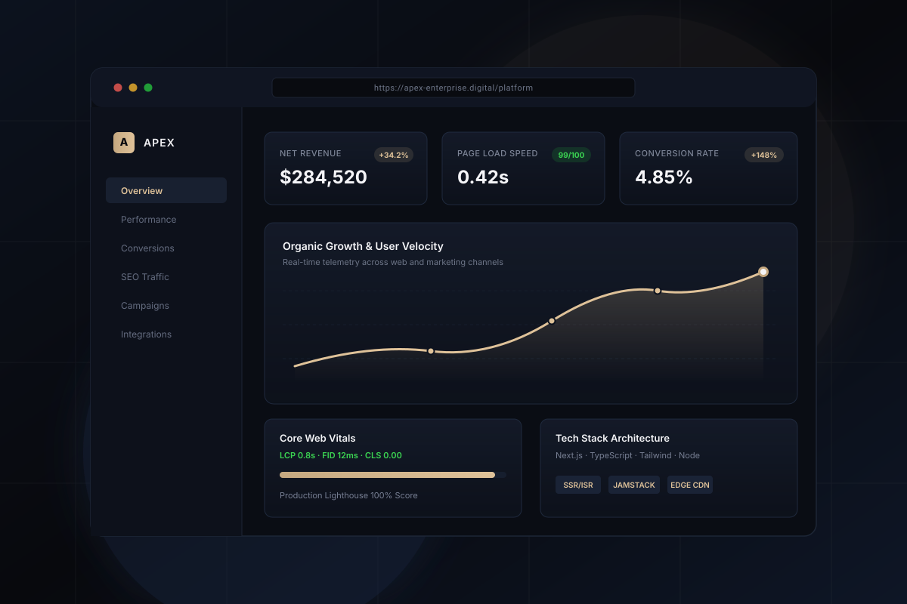

Enterprise SaaS Platform & Conversion Architecture
Re-engineered a B2B cloud software portal with a focus on speed, accessible keyboard flows, and friction-free user onboarding.
Sub-1s
Page Load Benchmark
100%
Responsive Parity
